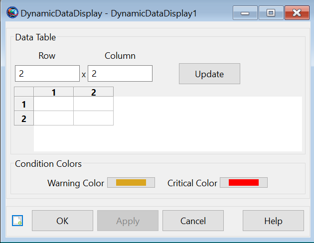
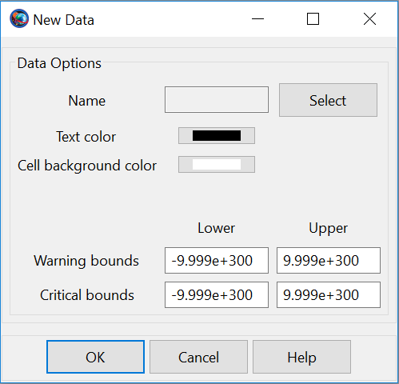

DynamicDataDisplay — A user-defined resource used in tandem with the UpdateDynamicData command to print current values of parameters to a table on the GUI.
The DynamicDataDisplay is a resource that generates a table of user chosen parameters that are updated during a mission sequence where the UpdateDynamicData command is used. The purpose of this display is to provide the user the option to directly see how data is changing during a mission as the changes happen.
Various options when using this resource include being able to set the parameter's text color, setting the background color of the data cell, setting warning condition bounds and setting critical condition bounds. The most common places to use this resource is in looping sequences such as a for loop, optimization, targeting, etc.
See Also: UpdateDynamicData
| Field | Description | ||||||||||||
|---|---|---|---|---|---|---|---|---|---|---|---|---|---|
| AddParameters | Field to set the parameters the desired row, the first entry in this array must be the row number desired. Ex. MyDynamicDataDisplay.AddParameters = {1, Sat.X, Array(2, 1)};
| ||||||||||||
| BackgroundColor | Field to set the background color of the cell showing the chosen parameter value, the first entry in this array must be the parameter to change the background color of followed by the desired color, i.e. MyDynamicDataDisplay.BackgroundColor = {ParamName, Color}.
| ||||||||||||
| CritBounds | Field to set the critical bounds on a parameter, stepping outside these bounds will change the parameter value’s text to the set critical color. The first entry is the parameter to which these bounds will be applied to while the second is a real array, i.e. MyDynamicDataDisplay.CritBounds = {ParamName, [LowerBound UpperBound]}.
| ||||||||||||
| CritColor | Field to set the text color that a parameter’s value will change to once it has stepped outside the defined critical bounds.
| ||||||||||||
| Maximized | Allows the user to maximize the DynamicDataDisplay window. This field cannot be modified in the Mission Sequence.
| ||||||||||||
| RelativeZOrder | Allows the user to select which DynamicDataDisplay to display first on the screen. The DynamicDataDisplay with the lowest RelativeZOrder value will be displayed last while the DynamicDataDisplay with the highest RelativeZOrder value will be displayed first. This field cannot be modified in the Mission Sequence.
| ||||||||||||
| RowTextColors | Field to set the colors of the text showing parameter values, the first entry in this array must be the row number desired entered as a string, i.e. MyDynamicDataDisplay.RowTextColors = {RowNum, Color1, Color2, ...}; The number of colors cannot exceed the number of parameters in the selected row.
| ||||||||||||
| Size | Allows the user to control the display size of generated DynamicDataDisplay. First value in [0 0] matrix controls horizontal size and second value controls vertical size of the DynamicDataDisplay. This field cannot be modified in the Mission Sequence.
| ||||||||||||
| TextColor | Field to set the color of the text showing the chosen parameter value, the first entry in this array must be the parameter to change the text color of followed by the desired color, i.e. MyDynamicDataDisplay.TextColor = {ParamName, Color}.
| ||||||||||||
| Upperleft | Allows the user to pan the generated report file display window in any direction. First value in [0 0] matrix pans the DynamicDataDisplay horizontally and second value pans the window vertically. This field cannot be modified in the Mission Sequence.
| ||||||||||||
| WarnBounds | Field to set the warning bounds on a parameter, stepping outside these bounds will change the parameter value’s text to the set warning color. The first entry is the parameter to which these bounds will be applied to while the second is a real array, i.e. MyDynamicDataDisplay.WarnBounds = {ParamName, [LowerBound UpperBound]}.
| ||||||||||||
| WarnColor | Field to set the text color that a parameter’s value will change to once it has stepped outside the defined warning bounds.
|
The figure below shows default name and settings for the DynamicDataDisplay resource:
|  |
The figure below shows default name and settings for a parameter to be displayed in the DynamicDataDisplay resource:
|  |
The grid in the setup panel represents the current parameters added to this DynamicDataDisplay. To change the grid dimensions, enter integers into the “Row” and “Column” text boxes and click “Update”. Double clicking with the left mouse button on one of the grid cells will open a dialog containing all the options for the parameter that will go in the selected cell. The “Select” button takes the user to a parameter selection window to choose the desired parameter. Once selected, the user can also change the options on this parameter if desired. Once “Ok” is clicked, the name of the chosen parameter will appear in the cell on the initial panel that was selected. To remove an undesired parameter from the grid, select a cell and hit the Delete key. This will remove the parameter and set all other settings of that cell back to default values.
If the user skips a row or multiple rows in the script (for example only putting parameters in rows 1 and 4), then the rows in between are simply left as empty cells shown in the GUI. When the table is built, it will make the number of columns in each row match the row with the most parameters. For example, if row 1 has 5 parameters, but row 2 only has 3, the two extra columns in row 2 will still appear but they will simply be left empty. The user may also insert their own empty fields in the grid by adding an empty string using quotations or by leaving boxes in the grid blank when using the setup panel.
The critical condition overrides the warning condition, i.e. if a parameter is currently the warning color and proceeds to step outside the critical bounds, the text color will be changed to the critical color. If a parameter returns within the critical or warning bounds, the critical or warning colors are removed respectively. If the user has specified a text color besides black to be used for a parameter, the warning and critical bound colors will not be applied even if bounds are violated.
Create a DynamicDataDisplay resource named myDisplay with two rows, user set text colors, and setting condition bounds on mySC.X.
Create Spacecraft mySC;
Create DynamicDataDisplay myDisplay
GMAT myDisplay.AddParameters = {1, mySC.X, mySC.Y};
GMAT myDisplay.AddParameters = {2, ‘’, mySC.Z};
GMAT myDisplay.RowTextColors = {1, Red, Black};
GMAT myDisplay.TextColor = {mySC.Z, [200 0 200]};
GMAT myDisplay.BackgroundColor = {mySC.Y, Blue};
GMAT myDisplay.WarnBounds = {mySC.X, [-1000 1000]};
GMAT myDisplay.CritBounds = {mySC.X, [-3000 3000]};
GMAT myDisplay.WarnColor = Orange;
GMAT myDisplay.CritColor = [200 150 0];Using a DynamicDataDisplay with an UpdateDynamicData command.
Create Spacecraft mySC;
Create Propagator myProp;
Create DynamicDataDisplay myDisplay;
GMAT myDisplay.AddParameters = {1, mySC.EarthMJ2000Eq.X};
BeginMissionSequence
Propagate myProp(mySC) {mySC.ElapsedSec = 12000.0};
UpdateDynamicData myDisplay;